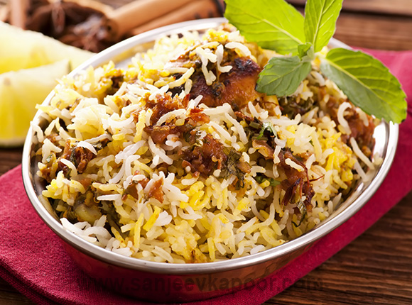

HYDERABADI BIRYANI
Ingredients for Hyderabadi Biryani
- Mutton a mix of chops, marrowbone and shoulder pieces 500 grams
- Basmati rice 1 1/2 cups
- Salt to taste
- Bay leaves 2
- Green cardamoms 10
- Black peppercorns 25-30
- Cinnamon 3 inch sticks
- Oil 1 tablespoon + to deep fry
- Onions sliced 5 large
- Caraway seeds (shahi jeera) 1/2 teaspoon
- Cloves 10
- Ginger paste 1 tablespoon
- Garlic paste 1 tablespoon
- Red chilli powder 1 tablespoon
- Yogurt 1 cup
- Fresh coriander leaves torn 2 tablespoons
- Fresh mint leaves torn 2 tablespoons
- Pure ghee 4 tablespoons
- Black cardamoms 2
- Saffron (kesar) mix in 1/4 cup milk a few strands
Procedure to cook Hyderabadi Biryani
-
- step 1
-
Heat five to six cups of water in a deep pan. Add drained rice, salt, bay leaves, five green cardamoms, seven to eight black peppercorns, one cinnamon stick and cook till three fourth done.
- step 2
-
Drain and set aside. Heat sufficient oil in a kadai and deep-fry half the onion slices till golden. Drain and place on an absorbent paper. Grind caraway seeds, one cinnamon stick, remaining black peppercorns, cloves and remaining green cardamoms to a fine powder and set aside.
- step 3
-
Take mutton pieces in a bowl. Add ginger paste, garlic paste and salt and mix. Add the spice powder, red chilli powder, half the fried onions crushed, yogurt, coriander leaves, half of the mint leaves and one tablespoon oil and mix. Let it marinate for about two hours in the refrigerator.
- step 4
-
Heat two tablespoons ghee in a pan, remaining cinnamon and black cardamoms and sauté till fragrant. Add remaining onions and sauté till light golden. Add marinated mutton, stir and cook on high heat for three to four minutes. Cover, reduce heat and cook till almost done.
- step 5
-
Heat the remaining ghee in a thick-bottomed pan. Spread half the rice in a layer. Spread the mutton over the rice. Sprinkle remaining torn mint leaves. Spread the remaining rice. Sprinkle saffron milk. Cover and cook under dum till done. Serve hot with a raita of your choice.

Nutrition Info
- Calories : 3388
- Carbohydrates : 300.3
- Protein : 129.7
- Fat : 185.3
* To watch the making video of Hyderabadi Biryani press on the following "Click Here" link
CLICK HERE